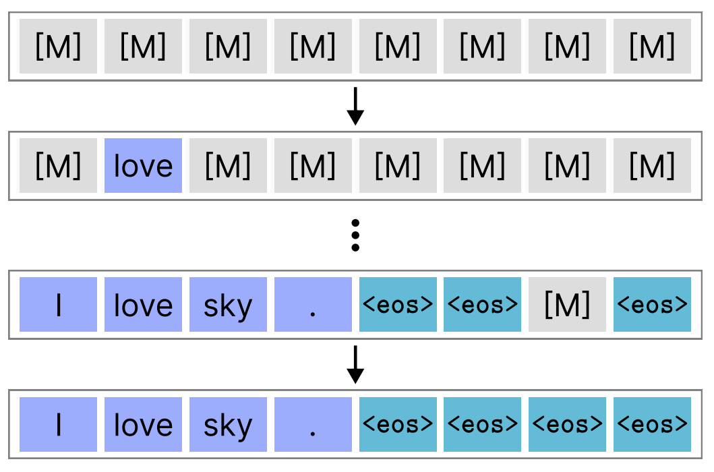
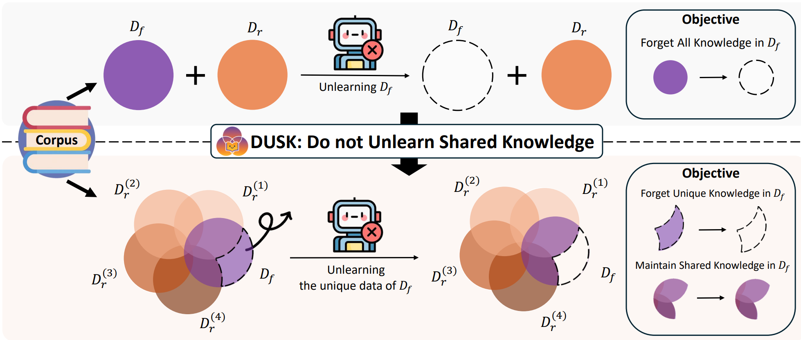
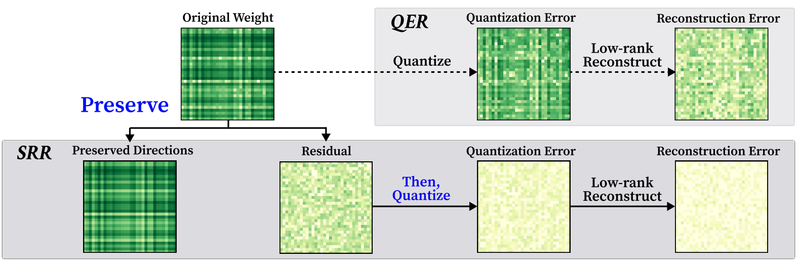
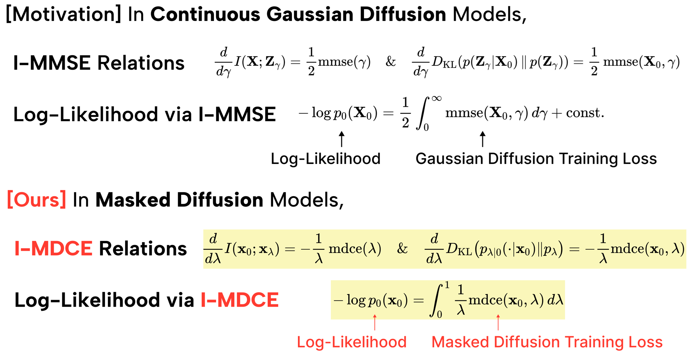

Research
Research themes
We explore discrete diffusion language models, privacy and safety in machine learning, efficient LLM compression, and foundational deep learning theory.
Research topics
Focused themes

Discrete diffusion language models
We study discrete token diffusion for language generation to understand sampling behavior, convergence, and model dynamics. Publications emphasize how discrete diffusion reveals new insights into text modeling.

Privacy & safety ML
We develop training methods that protect data and reduce harmful outputs. Our work combines differential privacy, robust training, and safety-aligned model design.

LLM quantization & compression
Large language models must be made efficient for real-world use. We focus on low-bit quantization, compression-aware training, and model scaling that preserves performance.

Deep learning theory
We investigate learning dynamics, optimization landscapes, and theoretical foundations of deep networks. This research helps connect empirical results with principled understanding.